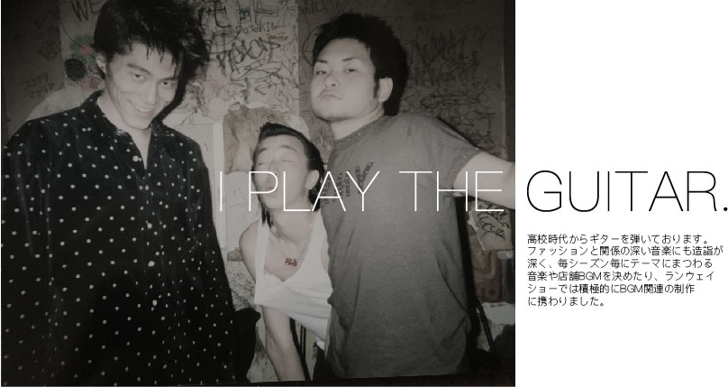
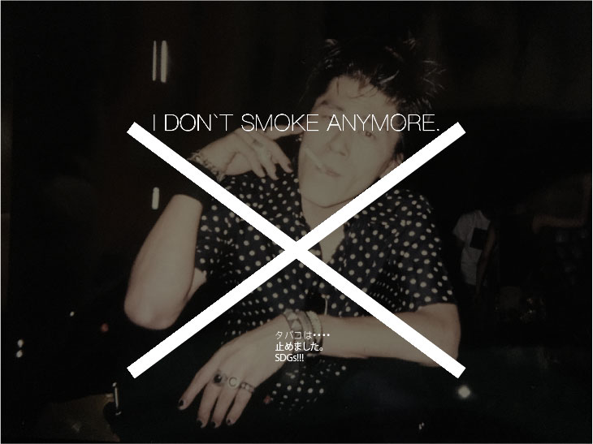

"Column"
'審美眼'

昨今、美術品版画の偽作が出回っている。
平山郁夫や東山魁夷など日本画家でも著名な作家たちの作品。
しかも偽作を依頼しているのは日本の画商だという。開いた口が塞がらない…。美術市場を揺るがす背信行為である。
既に市場に出回っている事から購入者も多数存在する。これら版画は、Ref番号やサインを基準として判断する為、鑑定の必要性も低かったようだ。
加えて現在の日本の技術ならば、鑑定を受けても贋作か本物かわからない程の贋作を作ることは可能だろう。鑑定する側にいくら審美眼が備わっていても中々に難しい。
将棋界では、人間がコンピューターに勝つ事はほぼ皆無に等しくなっている。
さて、こと、洋服においては、まだコンピューターの出る幕は乏しい。
良いデザインか悪いデザインかは人間が判断しその先の判断を下すのもまた人間。
兼ねてから、日本人は他人と同調して右に倣えの風潮がある。近年ではさらにその風潮が強まっていると感じる。
アナログなアパレルであるからこそ、コンピューターに判断される時代が来る前に審美眼を磨き、オリジナリティを追求し、いつの時代になってもAIに判断される事のない業種であって欲しいと切に願う。
人の言うことは気にするな。
「こうすれば、ああ言われるだろう」
こんなくだらない感情のために、どれだけの人がやりたいことも出来ずに、死んでいくのだろう。
他人にそのくだらない小箱をこじ開けてもらって、違う考え方を取り入れるようにしてもらわなきゃ。
ジョンレノン
